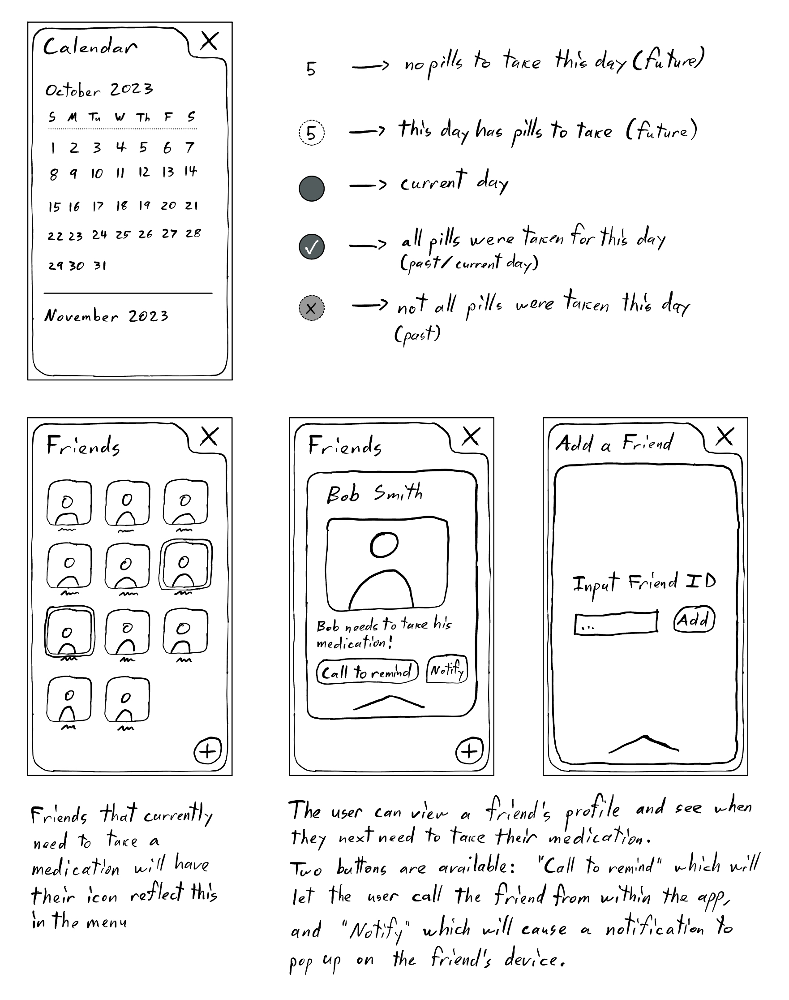

Med Minder - A Medication Reminder Application
By Alessio Amorelli and Paul Humennyj
Introduction
As humans evolve and revolutionize the health industry, there are more and more ways to stay healthy and live longer lives. Aside from surgical and procedural medical advancements, advancements in the medication industry have been astronomical. If someone has a health problem in 2023, there is most certainly a pill that can be used to help cure said problem. Medication isn't only used for health problems, but can also be used as health promoters, such as with vitamin pills. Overall, medication has become a staple part of our society and as we grow older, it becomes more common to have to take some. However, we frequently hear or see that many elders might forget or have difficulties taking their medications. That is why we have decided to create an application that will help elders to correctly take their medication when required.
The Problem
As humans get older, we generally get weaker both physically and mentally. It becomes more difficult to perform certain activities and we find ourselves taking more medication to help keep up with our current problems, and to stay healthy. However, it can be difficult to correctly take your medication and organize yourself with age. This is because as we age, our memory tends to become weaker, and it is easier to forget things. There are also cognitive problems that could arise and can further damage our memory capabilities. As for physical problems, our eyesight gets weaker and it becomes increasingly difficult to read small print. Both of these physical and mental problems are leading factors as to why elders have difficulty keeping track of their medication intake.
Our Solution
Our team designed an application that would help users by reminding them to take their medication at the required times, as well as keep track of all the medications they have taken. This application would also be able to help them schedule their appointments and get reminders for those as well. Finally, the application would offer a feature that would allow your close ones or your caretakers to see if you have taken your medication. The application would be very simple, would display in large font to allow ease of reading, and would have a voice over option for those that have more difficulty reading.
Research
In order to design an app for elders, adequate research must be conducted. It is for that reason that we researched similar applications, as well as created surveys and distributed them to elders to see directly what their wants and needs were.
A Look Into Medication Apps
There are many medication apps available for consumers and by searching through the highest rated ones, we compiled our research into different categories such as features, user's wants, and our own personal observations.
Medisafe Pill & Med Reminder
This application is primarily focused on reminding users to take their pills and medication, and to track their health. It has some useful features such as being able to see the interaction between medications (if they can clash with each other), gives reminders for refills, can track health measurements, and more. Some missing features that users have requested include an easier way to unsubscribe from emails, a better support feature that responds quickly, a way to quickly select that you have taken a medication, an easier to way to select time frames, and an easier way to "delete" a medication. Some features that we noticed that aren't available that can be helpful are being able to add reminders for other things such as retainers/night guards, exercises, etc., better functionality for one-time pill uses, and removing the subscription model for extra features as that is always a downside for an application (and this one has automatic renewals on top of it).
Play Store LinkMyTherapy Pill Reminder
This application is primarily focused on reminding users to take their medications, as well as track basic health levels. It has some useful features such as a pill tracker with a logbook for skipped and confirmed intakes, contains a health journal where users can track activities and moods, personalized tips for your treatment, and more. Some missing features that users have requested include better and more clear notifications, an option to delay medication/change time at which you will take it at, and an easy way to make one-time medication entries. Some features that we noticed that aren't available that can be helpful are a calendar system, a more in depth sharing feature, and no appointment tracking or setting.
Play Store LinkAfter all our research into other applications, we have come up with features we would want to include and features we want to avoid. Some of the features on the inclusion list include easy one-time medication uses, a good reminding/notification system that can be edited by the user, a calendar system with different views (day, week, month), an easier way to delete and start taking medications, and more. Some of the features on the exclusion list include subscriptions or any form of paid content, complex UI designs, small and hard to read fonts, extra health features as it can be complicated and overwhelming for users (especially elders which is our demographic), and more.
Surveys
We created a survey2 for elders and split it into two sections. The first section being their familiarity with mobile devices and the second section being focused on the user's experience with taking medication. The following analysis is based off of 22 respondents.
The majority of our respondents were aged between 60-64, 45.5% approximately. The remainder where 65-69 at 18.2%, 70-74 at 22.7%, 75-79 at 9.1% and 80-81 at 4.5%.
We can also see that no respondents feel like they are uncomfortable with technology.
Half of the respondents frequently ask for aid when it comes to their mobile device.
From our data gathered about the use of mobile devices, we can see that all elders are comfortable with using their device and that around half frequently ask for help with their device. From this we can conclude that many users understand the inner workings of their mobile device which means our application can be a standard application that doesn't require tutorials or many teaching features as they are competent with their mobile devices.
When it comes to taking medication, the number of medications elders take daily varied greatly. The majority was 2 medications at 27.3%, however half of the respondents take 3 or more medications daily. This number of mediations can already be difficult to keep track of, especially if you have to take them multiple times a day at different time intervals.
63.6% of respondents say that they do not forget to take their medication, and half the respondents track their medication intake.
13.6% of respondents find that they are often getting reminded by others to take their medications which means that there is still a decent portion of elders that need reminders. This made us brainstorm various ways to help users connect with their close ones in order to help with tracking and reminding.
We also found that 54.5% of respondents have eyesight problems and also find it difficult to read smaller print. This made us believe that we needed an accessibility option for users with poor eyesight.
59.1% of respondents believed that they would benefit from an application to help remind them to take medication. This shows that there is a market for this type of application, however there will most likely need more functionality to reach a wider audience. Thus, we began brainstorming various features such as calendar views, and report generation.
When asking what feature do you think would be crucial to making a successful medication app that you would want to use, there were 3 frequent responses. Those responses were efficient and prominent notifications, very simple and easy to use, and larger font/easy readability. A less common response was to have refill reminders also. These results prompted us to think of ways to make notifications more flexible and clear, how to simplify the use and look, and give options to change font size (see some quotes below).
Overall, our survey results gave us a lot of valuable insight into our users. We learnt that almost all users are efficient with their technology, however some still ask for help with certain functionalities. We also found that many elders take multiple medications daily and that some of them can be forgetful sometimes (around 40%). Half of the users track their medication intake and 13.6% of users say that they are often reminded by others to take their medication. These results have allowed us to brainstorm ways to solve user's problems and create a more usable app for all of them.
Quotes From Participants
"Having notifications alerts with a sound, even when the device is not in current use, that would really help with reminders."
"I'm usually very busy and on the move, I would use a medication app only if I have the option to snooze an alarm or take a medication later."
"A reminder when to renew medication which comes in liquid in opaque containers, such as eye drops."
"Large font, or being able to change the font to a preferable size."
Personas
After gathering and analyzing our data, we were able to generate four user personas that accurately represent our surveyed population and potential users for our application. These personas vary in attributes such as gender, age, technological knowledge, career, and personalities.
Jane Porter
Jane Porter is a 70 year old woman who has recently retired from her job. She is very active and enjoys spending time and going out with her friends and family. She is always on the move and likes to spend her money. She typically purchases cars and uses them for a year or two and then moves on to the next car that she finds interesting. She also enjoys

Jeffrey Wright
Jeffrey Wright is an 82 year old man who has been retired for many years. He lives with his wife of 62 years and he relies on her a lot. He can be quite forgetful sometimes and finds it difficult to keep track of all the medication he is prescribed. She helps him, along with his children. Otherwise, he enjoys spending time with his family and watching animals.

George Philips
George Philips is a retired electrical engineer who enjoys retirement by spending time with friends and family. He prefers He prefers the peace and quiet over the busy and rowdy lifestyle. He enjoys trying new things and likes to keep up with new technology and keep himself informed in the technological world.

Elanor Lucas
Elanor Lucas is a retired woman who loves to travel. Ever since she retired, she has had more time to explore the world and live her adventurous life. She likes to be in control of things but can get overwhelmed at times as always being on the move can be stressful.

User Journey Maps
The point of creating user journey maps was to map out the user experience of our product from our users. It allows us to get a better understanding of the flow that user's go through and their feelings throughout every touch point. It also allowed us to identify our persona's pain points and satisfaction points while using the application.
Jane Porter was pleased with the easy of use and the quick to input features. She disliked that some tabs weren't useful to her so she felt like it was wasted space.
Jeffrey Wright was very satisfied with the application and particularly enjoyed the connections feature which allowed for easy sharing and communication with his close ones when it comes to his medications and intake history.
George Philips was very excited to learn more about a potential application to help track his medication. As he progresses through the application he gets a bit confused but is overall glad that there is a way to connect with close ones.
Elanor Lucas was initially a bit reluctant to get an application for medication reminding and tracking as she feels like it's her own personal information. However, she feels more relieved when she downloads the application and sees that it doesn't collect any data and that it is very simple to use.


User Flow Diagram
For the user flow diagram, we will show the path that a user will take when trying to add a new medication, retake an archived medication, and create a new event that is an appointment. The top part of the user flow diagram shows the path of trying to add a new medication, as well as retaking an archived medication. The bottom part shows the path of creating a new appointment, as well as editing a pre-existing one.

Empathy Map
After gathering our data, we have created an empathy map based on our personas and our research. The following map provides the four areas of said, did, thought, and felt, along with the pains and gains.

Design Process
To begin experimenting with possible designs, we created sketches by combining inspiration from the aforementioned existing apps and the results from our survey participants. This then evolved into a higher fidelity wireframe, which largely served as a means to determine specific placement of elements and have a cleaner version of the original sketches. Finally, the prototype mockup was built to fully bring to life our vision for the Med Minder app.
Application Concept
A commonly repeated word from survey participants was "simple". This one word became central to our vision for the app's design. It should appear friendly, welcoming, and non-intimidating. To help increase these feelings of safety and comfort, a major design choice was to round the corners for the majority of elements. Another important thing is for the user to keep track of "where they are" in the app, so we approached the pages in the app as being layers, similar to how one imagines windows on computers. With these basics in mind we began designing.
Sketches
Going from a fairly "standard" design in Sketch 1, we developed the basis for our final design in Sketch 2. The homepage warmly greets the user by name, conveniently providing the current date and time. It aims to be the opposite of overwhelming, with three big buttons leading the user to three different pages (Medication, Calendar, Friends). Additionally, a small settings button is also made available. As mentioned in the previous section, we went for a look with rounded corners to encourage users to interact with the various elements on display. In the medication list, each listing shows all essential features in a clear and simple way: a small image of the pill, a vertical band that the user can customize for color coding, the medication name, the quantity that must be taken next, and finally in how long the user has to take the medications. Opening up a specific medication allows the user to edit details, read notes, and indicate the given medication as having been taken. The other two sections of the app, Calendar and Friends, are even simpler and similarly designed.
Wireframes
The purpose of making higher fidelity wireframes was to allow us to better picture what we began in the sketches, and determine positioning of certain elements in a better way. Our confidence in the layout we made for the sketches resulted in the wireframes having very minimal changes. Compared to the sketches, a benefit of the wireframes is that the layers are more easily visible. On the homepage, the app's backmost background color is most plainly visible. Opening any of the three sections of the app brings up a new layer (like a window on a computer) of a different color, with a sliver of the original background framing it. This gives the user a better sense of not only where they are in the app, but also how to get back to the menu. The always available "X" button in the top-right corner makes sure of this. A third layer is used when the user selects a specific medication or friend profile to view or edit. The colors of the previous two layers are still visible, again helping the user find their bearings.


Color Palette
For our color palette, we wanted to choose colors that weren't too bright or dark as fluorescent colors and darker colors can make it harder to focus. We also wanted colors that popped and were appealing to the eyes, all while being lowkey and not intrusive. Our main two colors include an orange-type and a turquoise-type. We also use colors such as white and grey for soft backgrounds with black text on top as that is easier to read than white text. We also have some green and red colors to indicate certain functionalities such as accepting, rejecting, going back, etc.
Typography
For our typography, we wanted to focus on a font that is easily readable and is consistent when changing its size. We
also wanted to make sure the font size was not only clear, but large in size (with the flexibility to switch size). Our
reasoning for this is because from our research, we found that more than half of the respondents have difficulty reading
smaller fonts.
The font we chose is Open Sans Hebrew of the Sans Serif family as it is a very simple font that
many elders find visually appealing
1. It also has a very strong boldness that catches your eye and makes it very easy to read.
Naming and Logo
For the name of our application, we wanted a unique and simple name that easily rolls off the tongue and that accurately
describes what our application is for. We wanted to have the word reminder or alert in the name as that is the main purpose,
as well as something to indicate medication (even though the application can be more than medication but that is the main
use). Thus we came up with two names, Med Minder and Med Alert. Med Alert seemed similar to Life Alert and we wanted to be
unique and we found that Med Minder flowed well and is alliterative which is always nice to have.
For our logo, we wanted it to primarily be a pill bottle as that is the most common form of medication. As we went through
different iterations, we liked the idea of having the main color of the bottle be orange as that is recognizable. We also
experimented with different complimentary colors and found that a darker turquoise with some white accents, mesh really well
with the orange color. Finally, when we settled on the name Med Minder, we wanted to have a double M symbol on the bottle
to represent the name of the application.
Mockup
Loading Screen and Home Screen
For our loading screen, we wanted something simple that is appealing to the eye and shows our brand well. We opted to show the application name, highlighting the first letter of each word, and having our icon be in the center of the screen. For our main page, we wanted to keep the simplistic styling as well and create large, readable buttons that are easy to press.


Medication
For the main purpose of the application, we wanted the medication tab to display medications in large displays to make it easier to see them. We also opted for various forms of distinction such as color coding, and using images to satisfy the accessibility needs of many people. The information displayed is also the most important such as the name and when it needs to be taken. More information can be seen when expanding the medication. It was also important to make the process of marking the medication as taken, to be quick and easy, and to use simple wording to not confuse people. Furthermore, our archive system is to keep medications in the system in case you need to retake them (this is also very useful for one-time use medications).


Notifications
For our out of app notifications, we wanted to only have the necessary information and that's why we opted to have it say that it was time to take your medication and the medication name is bolded, along with its corresponding image is shown.

Calendar
For our calendar, we wanted to give the flexibility to users to view their calendar in different views: monthly, weekly, and daily. The smaller the scale, the more information that is visible. The monthly view is a more visual look that displays the status of your medication every day while the weekly and daily views are more for the specifics. Clicking on a day in the monthly view would transport you to its daily view. You can also schedule appointments to organize yourself, keep track, and notify yourself when they approach. Finally, being able to generate reports was also an important part of our application and we wanted to allow the user to choose any dates they wanted, and to be able to easily share it with their connections.


Connections
The connections tab is meant for users to easily share their data, as well as have close ones be able to check in on their status and help them stay on track. We kept it simple with a display of your connections, as well as a simple way to add and edit them.


Settings
For our settings, we wanted a simplified view that made it easy to view your settings, as well as edit them. Each setting page would looking similar to the select language one where the options would be large and you would have some sort of visible representation, and you can easily select your preference.

Final Prototype
Our final prototype is displayed below using the Figma interactive system.
Conclusion
In conclusion, this project allowed us to greatly expand upon our UI and UX design capabilities and it taught us a lot of new things. We were able to effectively separate tasks and focus on our strengths. For example art tasks were primarily done by one member, while writing tasks were more focused on by the other member. We also learned a lot about user research and the effectiveness of surveys and interacting with your users. We were challenged to create an application for a population that isn't generally focused on for application design as elders are less inclined to be as into technology as the younger generations are. We tried to focus our efforts on designing an application that was both useful and simple, all the while making it as accessible as possible. We believe that we succeeded in these regards, but there is always room to improve.
Next Steps
• Conduct more research into potential functionalities
• Gather more user data on more of the visual designs and functionalities
• Creating a fully functioning prototype that users can test
References
1. Designing for Senior Citizens Article
2. Final Survey Results